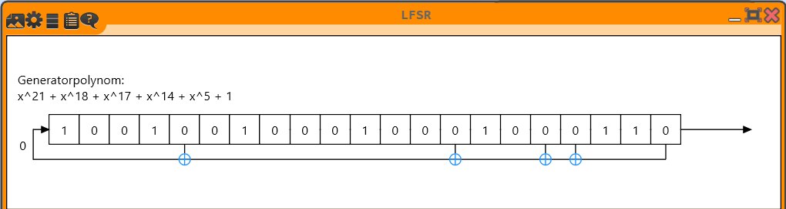
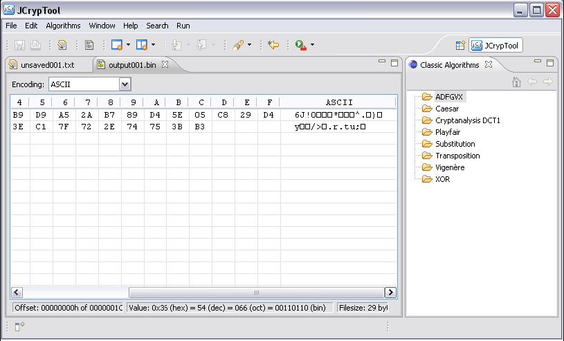
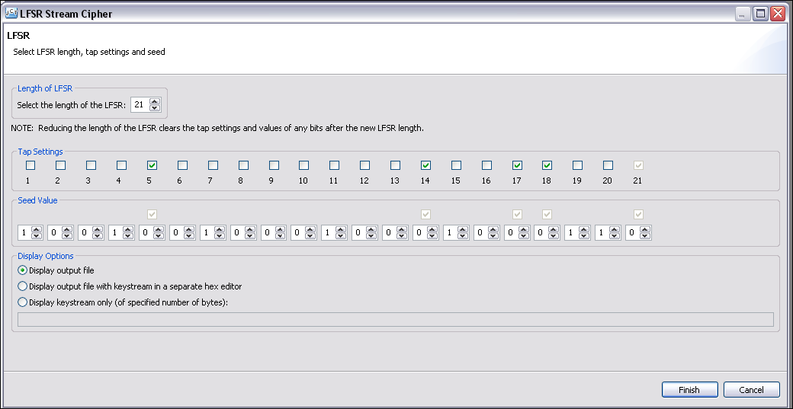
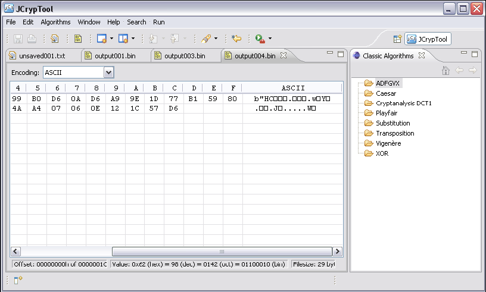

This tutorial will guide you, how to encrypt or decrypt a message with a modern basic stream cipher, the Linear Feedback Shift Register (LFSR). How the LFSR works (including references and some examples) is described in the accompanied online help website: LFSR Cipher.
Note: Using this dialog, you can either just generate/output the keystream, or you generate the keystream and then encrypt/decrypt the given message. Please first load a message in the JCT editor (like with all menu items below Algorithms -> Symmetric, the cipher is applied to the content of the active editor window).
This help file describes four use cases:
1) Encrypting a text message with the LFSR cipher
2) Decrypting an LFSR ciphertext
3) Additionally outputting the keystream used for encryption or decryption
4) Display the generated keystream (without applying it for encryption or decryption)
Select the size (length of the register) of the LFSR (here the length is restricted to a value between 1 and 25 for presentation purposes). You then have to select which bits of the register are tapped, and the value of the seed (The seed is the starting value or initial state of the LFSR register. Sometimes, the content of the register is also called stage. If a register bit is tapped, its content is used for calculating the next input bit of the register).
In our example we use the message "This is a JCrypTool txt file" and we have an LFSR of length 21. The 5th, 14th, 17th, 18th, and 21st bits are tapped (note that the final (right-most, oldest) bit in the register belongs to the highest degree of the binary polynomial and that it is always to be tapped). The chosen LFSR's seed is 100100100010001000110.
tap = 0000 1000 0000 0100 1100 1 seed = 1001 0010 0010 0010 0011 0
The following screenshot (taken from CrypTool 2) shows the 21-bit register and the 5 taps in the initial state.

Clicking on the Finish button will start the encryption/decryption process, close the LFSR dialog, and show the output in a new JCT hex editor window.

The resulting ciphertext (in output001.bin) can be decrypted, by selecting identical settings and values in the same wizard that was used for encryption. (Note: The output is opened in a hex editor rather than a text editor. This is because modern algorithms are based on bytes, not characters.)

Clicking on the Finish button will now start the decryption of the ciphertext and yield the correct plaintext which will be displayed in a new editor (output002.bin in the screenshot below).

Selecting the second radio button in the rectangle output options, offers to display not only the ciphertext, but also the keystream used in that encryption/decryption process in two separate hex editor windows.
A comparison of the keystream from the encryption process to that of the decryption process will show that given identical inputs, an identical keystream is produced.

The keystream is displayed in a new editor window (output004.bin above), with the plaintext being displayed as usual (output003.bin).
Selecting the third radio button in the rectangle output options, offers to display only the keystream (of a specified number of bytes). The number of bytes to generate for the keystream is specified in the textbox behind. This textbos is only enabled when the radio button "Display keystream only" is selected.

Our example shows the first 100 bytes of the keystream (output005.bin above), generated with the same seed and tap settings input as earlier.